3 Constraints-Specific Type Structure and Modes
This section presents those types and modes which are specific for the constraint extensions.
3.1 Type Structure
There are two additional secondary types.
Vector
A vector is a record with a label different from '|' or a list. The elements of the list or the fields of the record are called the elements of the vector. A finite domain vector is a vector all of whose elements are finite domain integers.
Specification of Sets of Integers
A specification of sets of integers Spec is used in cointext of finite domain and finite set constraints. It is recursively defined as follows.
Spec ::= simpl_spec | compl(simpl_spec)
simpl_spec ::= range_descr | [range_descr+] | nil
range_descr ::= integer | integer #integer
integer ::= FD.inf,...,FD.sup| FS.inf,...,FS.sup
A specification of sets of integers denotes a set of integers which is either the union of integer singletons  and integer intervals
and integer intervals  , or the complement
, or the complement compl(...) of such a set relative to 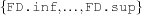 resp.  . Note that an empty set is specified by
. Note that an empty set is specified by nil.
In context of finite domain constraints for example, 2#5 denotes the set 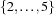, the specification [1 10#20] denotes the set 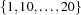, and compl(2#5) denotes  .
.
The value of FD.inf and FS.inf is 0 and the value of FD.sup and FS.sup is 134217726. These values are implementation-dependent.
Weight Specifications
Weight specifications SpecW occur in conjunction with set constraints (see Section 7.9) and are defined as follows.
SpecW ::= nil| [ElemDescr]+
ElemDescr ::= Int #Int| (Int#Int)#Int| default#Int
3.2 Signatures
Types
The additional type abbreviations are listed in Figure Figure 3.1.
Abbreviation | Type |
|---|---|
D | finite domain integer |
M | finite set of integers |
Xr | records of type X |
Xt | tuples of type X |
Xv | vectors of type X |
Xvv | vectors of vectors of type X |
Xrr | records of records of type X |
Figure 3.1: Type Abbreviations
Modes
Given a constraint store, every variable is in exactly one of the following three states. It is free if the store knows nothing about the variable apart from equalities, determined if the store knows the top-level constructor, and kinded if the variable is neither free nor determined. Variables which are either determined or kinded are called constrained.
The base language does not allow to constrain a variable without determining it. Most procedures of the base language wait until their arguments are determined.
Input Modes *, +
In the constraint extension, a variable can be constrained before it becomes determined. Accordingly, the constraint extensions use additional input modes * and $ which synchronize more weakly than +. The application of a procedure P waits until its inputs (+, *) are determined or constrained, respectively. If the input arguments are well-typed, P returns outputs of the specified types. Ill-typed input arguments produce a runtime type error (on completion of P).
Propagators
Note that it is perfectly possible that an input argument is constrained further. This is the case for many propagators, which have the following typical moding.
{P*X*Y*Z}
Note also that modes only partially specify the synchronisation behavior of a procedure.
Nestable Input Mode $
The mode $ slightly weakens * to allow for nesting of propagators. When  arguments of a propagator have input mode
arguments of a propagator have input mode $, then this propagator waits until 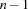 of them are constrained and then it constrains the remaining th argument according to its type.
3.2.1 Notational Conventions
Notational conventions are explained in context of finite domain constraints but apply of course for finite set constraints too.
Specification Input
The signature
{FD.int+Spec?D}
specifies that an application of FD.int waits until +Spec is ground, i. e., contains no free variables. Arguments of the form +Spec never occur. The signature
{FD.distinct*Dv}
specifies that an application of FD.distinct waits until its argument Dv is determined and all its elements are constrained to finite domain integers. Analogously, +Iv specifies that the application waits until Iv and all its elements are determined. The scheme
{FD.sumCN+Iv*Dvv+A*D}
specifies that the application waits until *Dvv and all its elements are determined, and until their elements are constrained to finite domain integers.
Generic Propagators
For some procedures like that for generic propagators, an atom occurring as an argument denotes a relation symbol. For example,
{FD.sum [X Y Z] '=:' D}denotes the constraint

If  is the atomic argument, 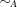 is the corresponding arithmetic relation. For the atoms
is the atomic argument, 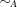 is the corresponding arithmetic relation. For the atoms '=:', '>:', '>=:', '<:', '=<:', and '\\=:' are allowed. The relations are  ,
,  , 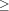,
, 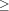,  , 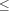, and 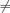, respectively.
, 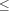, and 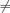, respectively.